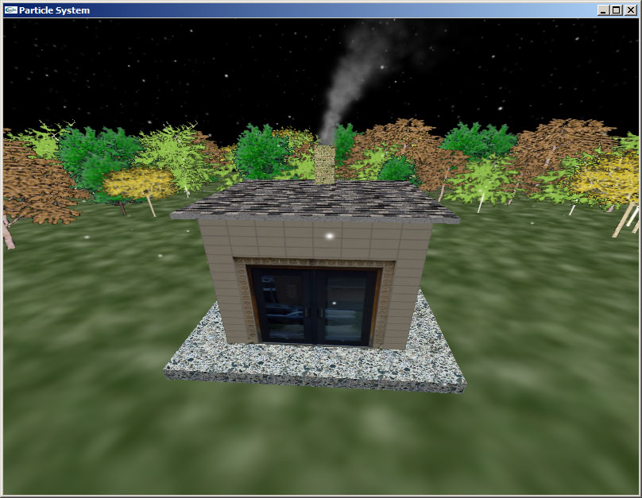
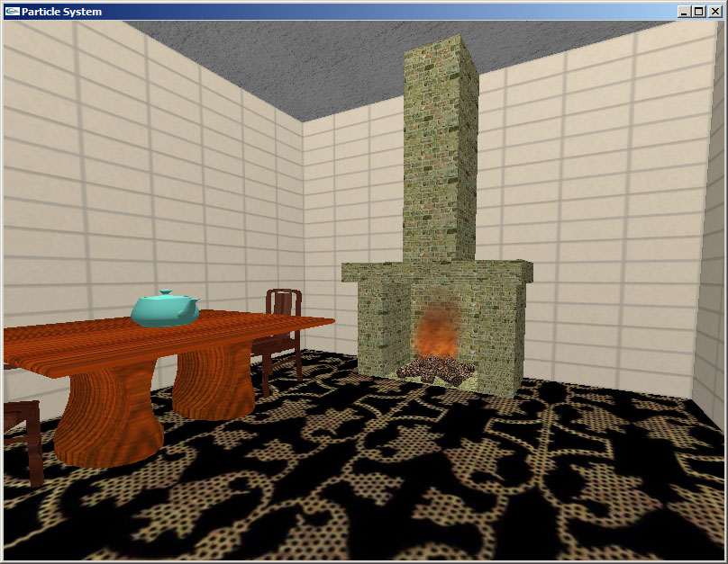
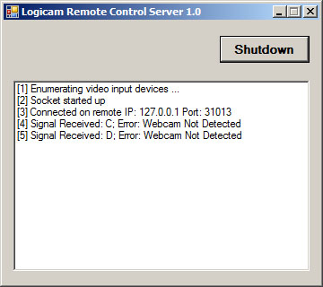
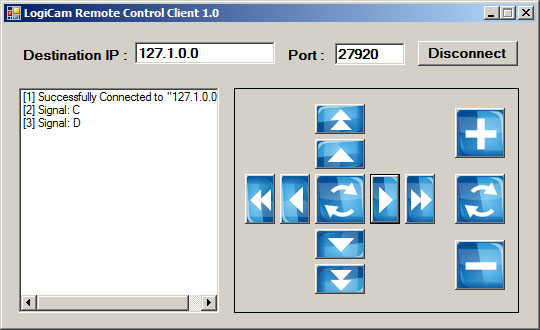

A quantitative analyst works at Standard Chartered Bank Singapore, developing FX and hybrid models for derivative pricing. I am a self-motivated quick learner keen on various financial models and numerical algorithms.
This site had been hosted at "http://www.cs.utah.edu/~cxiong/" for more than 10 years. Unfortunately, it had been permanently discontinued since 2018. I had to migrate the whole site to github (https://modelmania.github.io/main/). Hope this does not cause too much trouble to you...
Note on License
All programs presented here are free software unless otherwise stated inside the source files; you can redistribute it and/or modify it under the terms of the "Revised BSD 3-Clause License"
The programs are distributed in the hope that it will be useful, but WITHOUT ANY WARRANTY; without even the implied warranty of MERCHANTABILITY or FITNESS FOR A PARTICULAR PURPOSE.
I present here some quantitative finance projects that I have done or have been working on. Hope they can be of any help to you. If you have identified any typos/errors/bugs, or you happens to have any comments for me, please do feel free to drop me a line. Your feedback is much appreciated!
The notes start with an introduction to the FX option market conventions, including the basic option trading strategies, market quoting conventions for the at-the-money and delta definitions, and the market quoted at-the-money, risk reversal and strangle volatilities. A volatility surface can be constructed out of the market quoted volatilities using smile interpolation methods, e.g., Polynomial-in-Delta method and Stochastic Volatility Inspired (SVI) methods. There are three types of SVI methods, Uni-SVI, Bi-SVI and Tri-SVI. Experiments show that Polynomial-in-Delta method and Tri-SVI method are stable and easy to calibrate.
In the notes, a family of local volatility models and stochastic local volatility models is also introduced. The prototypes of these models have been implemented in C++ with functions exported as DLL to Excel. I created an Excel workbook to demonstrate the volatility surface construction, the calibration of the models, and the pricing of barrier options using the calibrated models, in FX context. Since solving 3D PDEs involves intensive matrix-vector operations, I have implemented Expression Templates in C++ to make the vector arithmetics more efficient. These models are briefly described below from the simplest Dupire to the most sophisticated MixedGeneralDupire
Dupire: classical Dupire local volatility model. The volatility process is assumed to be a function of time and spot level
MixedDupire: Multi-state Dupire local volatility model. A simple stochastic local volatility model widely used in the industry to price first-generation FX exotics. The stochastic volatility component is modeled as an initial random shock and calibrated to volatility smiles. The local volatility component is calibrated based on Gyöngy theorem by solving 1D PDE at different state levels of the initial shock and remixing the states in a forward induction manner
MCOUDupire: Markov Chain Ornstein-Uhlenbeck Dupire model. A simplified version of the OUDupire model. The stochastic volatility component is assumed to be driven by an independent discrete Markov chain process, equivalent to the Exponential Ornstein-Uhlenbeck process in OUDupire model. This simplification greatly improves computational efficiency as it avoids solving 2D PDE in calibration. Instead, we solve 1D PDE at different state levels and remix the states in a forward induction manner. This model is superior to the MixedDupire model as it possesses mean reversion dynamics, which is more realistic to describe the forward volatility dynamics
OUDupire: Ornstein-Uhlenbeck Dupire model, a full-fledged 2D stochastic local volatility model. The stochastic volatility component is modeled as an Exponential Ornstein-Uhlenbeck process with mean reversion. Calibration of the local volatility component is again based on Gyöngy theorem by 2D forward induction. The 2D forward PDE is solved using one of the locally one-dimensional methods
GeneralDupire: An extension of Dupire local volatility model that further assumes stochastic rates for foreign and domestic currencies. Both rates are modeled as Hull-White 1 factor short rate model. One big advantage of this model is that it allows to fit the volatility surface while still incorporating stochastic rates, though the model is relatively complicated as both calibration and pricing involve solving 3D PDE. Local volatility function in the GeneralDupire model must incorporate rates dynamics and hence need be calibrated through 3D forward induction. The 3D forward PDE is solved using locally one-dimensional method, one of the splitting methods developed to solve multi-dimensional PDE problems. As it solves 3D PDE, this model is relatively slow. The model was discussed in a short presentation with the powerporint slides
MixedGeneralDupire: Multi-state general Dupire local volatility model. This is a stochastic local volatility model with stochastic rates, extended from the GeneralDupire model and the MixedDupire model. The stochastic volatility component is modeled the same as in the MixedDupire model, which is driven by an initial random shock. Both stochastic rates are modeled as Hull-White 1 factor short rate model, the same as in GeneralDupire model. The local volatility component is calibrated based on Gyöngy theorem, by solving 3D PDE at different state levels of the initial shock and remixing the states in a forward induction manner
We also describe the vanna-volga pricing method in the notes, which is often used for pricing first-generation FX exotic products. An simple application of the method is to build a volatility smile that is consistent with the market quoted volatilities and allows us to derive implied volatility at any strike, in particular for those outside the basic range set by the market quotes.
Lastly, we present a PDE based local volatility model in the context of equity. In this model, the local volatility function is parametrized as piecewise linear in log-moneyness and piecewise constant in time. As in the Dupire model, traditional construction of the local volatility surface involves estimating highly sensitive partial derivatives in Dupire formulas. In contrast to the Dupire model, this method relies heavily on solving forward PDE’s to calibrate the parametrized local volatility surface to vanilla options, in a bootstrapping manner. Pricing can then be done by solving backward PDE along with the calibrated local volatility function. The model has been implemented in Python. To run the code, you may need to setup your Python enviroment by following the steps listed here.
I have been continuously expanding my notes on rates models. In the past year, I implemented and documented the Hull-White one factor model in a multi-curve framework. Both finite difference based PDE and least square regression based Quasi Monte Carlo simulation are implemented for pricing exotic rates products, such as bermudan swaptions/cancellable IRS, cancellable range accruals, and IR TARN's. Additionally, I also provided a routine to show a static replication of CMS (constant maturity swap) cap/floor/swap by a portfolio of swaptions. It addresses the convexity correction associated with the bond/annuity numeraire ratio.
The model has been implemented in Python using Numpy/Scipy and QuantLib. In fact, the implementation has considered most of the practical details (e.g. conventions and spot lag/payment lag, etc) that can be expected in a real trading system for both calibration and pricing. Both PDE and Monte Carlo method are implemented for side-by-side comparison.
To run the code, you would need a scientific Python environment and QuantLib-Python installed in your system. Although you can install each of the required libraries manually, the simplest way to get them all is to download and install (both are free open-sourced):
Alternatively, if you prefer the latest version of the QuantLib-Python to the aforementioned pre-compiled one, you may follow this guide to build your own QuantLib-Python library. This actually gives more flexibility as it allows the user to modify the QuantLib source code and incorporate the changes into a customized QuantLib-Python library.
After the credit crunch, majority of OTC traded derivatives are collateralized. Traditional single curve bootstrapping is therefore no longer valid for building discount curves to discount collateralized cashflows. Instead, dual curve bootstrapping has emerged, using overnight rate as risk free rate. There have been many literatures discussing the construction of OIS discounting curve. Here, I have created an Excel workbook to demonstrate the curve interpolation, OIS discount curve bootstrapping and collateralized interest rate swap pricing. In addition, I have also included an example that bootstraps a CSA curve from cross currency basis swap (e.g. EUR-USD basis swap). Such curve can be used to discount cashflows in one currency(e.g. EUR) while collateralized in another currency(e.g. USD).
The program is written in VBA. It implements the most used day count conventions and date rolling conventions. Bank holidays in Europe, UK and US are also accounted for. The bootstrapped curves are compared against those shown in literatures or those provided by Bloomberg. In most cases the errors are negligible.
The spreadsheets are still in draft version. New versions will be uploaded regularly. Meanwhile I am also preparing a document to be attached to the spreadsheets. Please feel free to write me your comments.
I have come across many interesting pricing models in my work. This document was initially motivated as a study note for my own reference to provide systematic explanations and detailed derivations of rate models. As it expands, the content has been increased significantly.
The note provides an introduction to interest rate models. Firstly it gives an intuitive explanation of the martingale pricing theory and the change of numeraire technique. It then introduces vanilla products in interest rate markets and summarizes the idea of convexity adjusetment for products like Eurodollar futures, LIBOR-in-arrears and Constant Maturity Swaps. Furthermore, it covers the Heath–Jarrow–Morton (HJM) no-arbitrage condition and then the short rate models, including one-factor Hull-White model, multi-factor Gaussian model, 3-factor Jarrow-Yildirim model for inflation and long-dated FX products, etc. At last it discusses intensively the Libor market model (LMM) (i.e. Brace Gatarek Musiela (BGM) Model in industry). It introduces the rate dynamics in the LMM, the volatility and correlation structures, the calibration procedures and its application to pricing Bermudan swaptions using Longstaff-Schwartz Least-Square Monte Carlo (LSMC) and predictor-corrector method.
To better illustrate the LIBOR market model, I have created an Excel workbook to demonstrate the model implementation, calibration, and its application to Bermudan swaption pricing. It is coded in VBA. The spreadsheets show the caplet volatility bootstrapping, the joint calibration of LMM to caplet/swaption volatilities and the calibration to co-terminal swaption volatilities, and the Bermudan swaption pricing using Longstaff-Schwartz method and Quasi Monte Carlo simulations.
The document and the spreadsheets are still in draft version. I am still expanding it with more topics. New versions will be uploaded regularly. Please feel free to write me your comments.
This document provides many details about the Heston model, such as the derivation of market price of spot/volatility risk, the Fourier transform method for option pricing, the derivation of characteristic function of the joint spot-variance process, the probability distribution of spot return, the piecewise time dependent Heston parameters [Elices 2008], etc.
Furthermore, the document presents a detailed implementation of the Finite Element Method (FEM) and its application to solve a Partial Differential Equation (PDE) arised from the Heston model. By varing the boundary conditions, the FEM solver is capable of pricing various path-dependent exotics. The FEM solver was originally implemented in C++ in Visual Studio 2008. I have recently revived the code completely to adapt many C++11/14/17 features. Please refer to the source code for more information. Additional libraries are required for compiling the source code. For your convenience, I have packed them into a single archive. You may download it from this link (compressed by 7-zip).
In addition, I have also created an Excel workbook to show the calibration of Heston Model to a single maturity of volatility surface, as well as the calibration of a piecewise time dependent Heston model [Elices 2008] to a term structure of volatility surface. Three types of inversion methods, including the Heston's original one, have been implemented for pricing vanilla options. Integrals in these semi-analytical formulas are estimated numerically by Gaussian Quadratures. Once the model is calibrated, the estimated parameters can then be used to price exotic options using monte carlo simulation, which in the spreadsheet implements Quadratic Exponential Scheme introduced by Anderson in the paper "Andersen, L., Simple and Efficient Simulation of the Heston stochastic Volatility Model, Journal of Computational Finance , 11 (3), pp. 1-42., 2008"
SABR is a widely used stochastic Volatility model developed by Hagan et al. in their paper "Hagan, P.; Kumar, D.; Lesniewski, A.; Woodward, D., Managing smile risk, Wilmott Magazine, pp. 84–108., July 2002". The Excel workbook provides a simple calibration of SABR model to swaption volatility smiles of selected expiry-tenor pairs. Excel SOLVER is used to minimize the differences between the market implied volatilities and the volatilities given by SABR model. In the workbook, both the original method proposed by Hagan et. al. 2002 and the fine tuned correction proposed by Obloj 2008 are implemented.
Additionally, as a comparison, I also implemented a constrained Nelder-Mead Simplex method in VBA to perform the minimization/calibration.
This draft was co-authored with Max Wong for a book chapter in Market, Liquidity and Asset Liability Management Risk Manager Handbook published by PRMIA in 2015. It introduces basic theories and practices of market risk management and measurement. Advanced topics are also discussed, including advanced backtesting methods, VaR estimation using Extreme Value theory and Copula functions and so on. It comes with a few explanatory Excel workbooks.
Independent component analysis (ICA) is a computational method for separating a multivariate mixed signal into statistically independent non-Gaussian (source) signals. ICA shares certain similarity with the principle component analysis (PCA) method. But unlike the PCA that imposes strong assumption of Gaussian features and seek variance maximization and ensure uncorrelatedness only by the first and second moments of the signal, the ICA exploits inherently non-Gaussian features for independence and employs information from higher moments.
The Excel workbook implements the FastICA method as introduced in the paper "Hyvärinen, A; Oja, E (2000). Independent Component Analysis: Algorithms and Applications. Neural Networks, 13(4-5),411-430". It attempts to separate mixed signals into independent components by maximizing negentropy, a measure of non-Gaussianity, of each component.
Kalman filter is designed to filter out the desired true signal and the unobserved component from unwanted noises. The Excel workbook provides an implementation of a discrete-time Kalman filter and demonstrates its application of Maximum Likelihood Estimation to a simulated state-space model, which assumes the measurement and transition system are time homogeneous.
Low discrepancy sequences, e.g. the Sobol sequence, are often used in Quasi Monte Carlo simulations to achieve a faster rate of convergence as compared to the standard Monte Carlo simulations. This is especially useful when a model, for example the LIBOR market model, needs to run a multi-dimensional Monte Carlo simulation. The Excel workbook, along with the document, provides an implementation of a multi-dimensional Sobol sequence generator in VBA and shows a few key properties of the low discrepancy sequence.
Stock Index Replication is the first step to perform Cash-Futures Arbitraging (e.g. arbitraging by long under-priced index replication portfolio and short the over-priced stock index futures). This JAVA program implements an efficient algorithm to search for an optimal index replication sub-portfolio from the index constituent stocks. The index tracking is completed through two steps of optimization procedures. Firstly, a parallel Genetic Algorithm is used to find an optimal combinatorial subset out of the index constituent stocks. Secondly, a Quadratic Programming routine is used to determine optimal allocation weights in the subset of the stocks that minimize the tracking error. The JAVA multithreading technique is used to implement a parallel mechanism for the genetic algorithm, which allows it to run on multi-processors and accelerate the search process. The source code package includes 4 files:
"IndexReplication.java": The JAVA source code of the algorithm mentioned above.
"QuadProg.java": A Quadratic Programming JAVA routine that implements Goldfarb and Idnani's 1983's paper: "A numerically stable dual method for solving strictly convex quadratic programs".
"data.csv": An example of input data file, which consists of daily returns of a stock index and its 300 constituents.
"IndexReplication.py": As a comparison, a concise Python implementation of the algorithm is also included for your reference. Note that this script does not implement the parallelism.
This was my final project of the course "Credit Risk Modeling". In a credit portfolio, correlation of defaults plays a key role. It has substantial impact on the value of the credit portfolio. To capture the feature, Davis-Lo model, a fully dynamic contagion correlation model, is implemented and calibrated to collateralized debt obligation (CDO) market tranche quotes. Both Monte Carlo simulation method and Markov Chain Generator method are applied to compute the distribution of the number of defaults. A numerical optimization routine is used to perform the model calibration. For more information, please refer to the source code which is implemented in Python.
This was my final project of the course "Portfolio Theory and Applications". It summarizes and applies the method described in the paper "Meucci, A., Managing Diversification, Risk, 22, 5, 74-79 (2009)" to analyze the portfolio risks and the risk diversification strategies. It uses standard principal component analysis and conditional principal component analysis method to analyze the risk profile under various constraints for portfolio construction and asset reallocation. The source code in MATLAB is also included for your reference.
Hedging (e.g. using stock index futures to hedge beta risk in portfolios) often ends up with using "ARMAX(0,0,1)/GARCH(1,1)" model to compute the hedge ratio. This is because a simple linear regression is not able to capture the stochasticity in volatilities. The JAVA class implements the MLE of the model parameters. The model is described as follows:
are two time series:
is the variance of residual:
The parameter γ is the hedge ratio. To be more realistic, the routine can also assume Student-t or exponential power distribution for the error term, in addition to the often used normal distribution. The BHHH method, a variant of Gauss-Newton method, is used to perform the nonlinear optimization. The optimization routine Nelder-Mead Simplex method is also used for comparison purpose.
Parameter Estimation using Markov Chain Monte Carlo (MCMC)
Below are two examples that demonstrate the application of MCMC method in model parameter estimation. The first example is a standard Linear Regression model and the second is a simple ARMAX(0,0,1)/GARCH(1,1) model (the same model shown above).
The Linear Regression model is in the form:
In this model, the parameters to be estimated are "". Metropolis-Hastings method is used to generate the MCMC sample sequencies. For simplicity, the prior distribution of the parameters are assumed to be flat (uniformly distributed). The proposed density utilizes a Normal distribution, in which case the original Metropolis-Hastings method reduces to a Random-Walk Metropolis Hastings method. Please refer to the Matlab script for the details of the implementation. For a simulated case using "", the method estimates the parameters and generates posterior distributions for the estimations. The histograms of the estimated parameters are shown here.
The ARMAX(0,0,1)/GARCH(1,1) model, which was previously estimated by MLE method, is in the form:
In this model, the parameters to be estimated are "". Random-Walk Metropolis Hastings method is again used to generate the MCMC sample sequencies. The prior distribution of the parameters is also assumed to be flat. Please refer to the Matlab script for the details of the implementation. It differs slightly from the case of Linear Regression with the fact that the parameters in GARCH model are constrained. To handle this feature, any sampled values that exceed the parameter bounds are assumed with zero probability and hence are discarded. For a simulated case using "", the method estimates the parameters and generates posterior distributions for the estimations. It can be expected that the estimation variances of the GARCH parameters are much larger than those of regression parameters. This shows that the Garch parameters are more sensitive to the input data. The histograms of the estimated parameters are shown here.
Here are a few selected programming projects I have finished for either my coursework or just my hobby (Source codes are either already provided or available upon request).
This is a GUI-based file encryption and decryption program based on the RSA algorithm.
It implements the following features:
Key generation
Generate new RSA public/private key pairs up to 1024 bits.
Key management
Manage the public/private key pairs that are either generated or imported.
File Encryption
Encrypt (or sign) arbitrary data files using the public (or private) key it manages.
File Decryption
Decrypt (or verify) the encryped (or signed) files using the private (or public) key it manages.
You must have Microsoft .Net Framework installed in your system to run it. The application was originally written in Visual C++.Net and translated to Windows Forms API in Visual Studio 2008, years ago. It had been further migrated to Visual Studio 2017 recently. The source code package has included an executable in the "release\" directory.
This is an OpenGL based computer graphics program used to demonstrate the use of particle systems to simulate log fire, smoke, and falling snowflakes. The scene as shown below consists of a house, ground and trees. Inside the house, there are serveral objects including a fireplace, which is simulated by a fire particle system. The house has a chimney that emits smokes simulated by a smoke particle system. In the sky, the snowflakes, yet another particle system, fall down to the ground. The house is created with various textured objects for realism.
The source code was originally implemented in C/C++ in Visual Studio.Net 2003 and had been recently migrated to Visual Studio 2017. The executable is also included as in the "release\" directory of the zip package. There is also a short discription of the project.

Web Camera Remote Controller
This is merely a hobby work. I use the program to remotely control Logitech QuickCam® Orbit AF
webcam while having a video chat with my family over the Internet. It involves two modules, the Server and the Client respectively. Upon a successful connection, the Client sends signals to the server via internet and the Server receives the signals and then controls the "pan", "tilt" and "zoom" of the webcam through DirectShow API. With this API, the program basically works with any web cameras that equipped with such features.
Again, this program was developed in C++ using Windows Forms API in Visual Studio .Net 2008 and had been recently migrated to Visual Studio 2017. Therefore it requires Microsoft .Net Framework installed to run. Please refer to the source codes of the Server and Client for details.

Hope you like this site! If you'd like to buy me a beer, please feel free to click the link below :). Thank you so much!
This page is always under construction.
There have been
unique visits to this page since July 18, 2013.
{kind=link}
{kind=link}